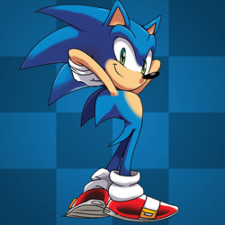
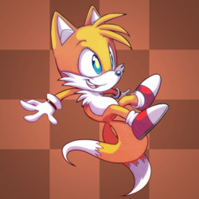
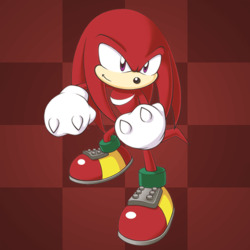
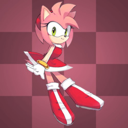
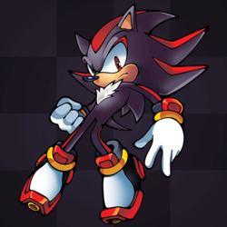
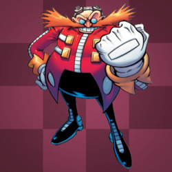

Персонажи
Соник
Маскот SEGA и главный герой. Благородный, храбрый ёж. Отличается способностью быстро бегать, мчаться он может быстрее звука. Однако Соник достаточно нетерпеливый и боится воды. Именно из-за него Эггман раз за разом терпит поражения. С Изумрудами Хаоса ёж может принять супер-форму, а с Супер Изумрудами — гипер-форму. В гневе может становиться Дарк Соником, в Sonic and the Secret Rings этой форме аналогичен "Даркспайн".
Тейлз
Тейлз — лучший друг Соника, лисёнок, который умеет летать с помощью своих двух хвостов. Он очень умный и прекрасно разбирается в технике (построил несколько версий самолёта "Торнадо", подводную лодку и даже космический корабль в Sonic X). Он был стеснителен, но после знакомства с Соником постепенно обрёл уверенность в себе. Он не может превращаться в Супер Тейлза, зато с Супер Изумрудами способен принять гипер-форму, в которой его окружают птички Флики.
Наклз
Наклз — защитник Мастер Изумруда и единственный оставшийся член клана Наклз. Он сильный, но упрямый и не самый сообразительный, из-за чего часто Наклза обманывает и использует в своих целях Эггман. Хоть он и считает охрану Мастер Изумруда своим долгом, он готов покинуть свой пост, если друзьям нужна помощь. Наклз умеет парить и карабкаться по стенам, а помощью Супер Изумрудов может стать Гипер Наклзом.
Эми Роуз
Эми — добрая и энергичная, но эксцентричная ежиха, влюблённая, в какой-то мере даже одержимая Соником с тех пор, как тот спас её в Sonic CD. Она всегда преследует Соника, пытаясь завоевать его внимание. Однако синий ёж старается избегать её. Эми никогда не расстаётся со своим молотом Пико-Пико.
Шедоу
Родился на космической станции ARK, как результат экспериментов профессора Джеральда (дедушка Эггмана) по созданию совершенной формы жизни. Военная организация G.U.N. сочла такие опыты опасными и вторглась на ARK. В ходе операции застрелили лучшего друга ежа — Марию. Но она успела отправить капсулу с Шедоу на Землю. Там он 50 лет провёл в анабиозе под охраной G.U.N. и был пробуждён вломившимся Эггманом. Единственное, что Шедоу помнил тогда — обещание отомстить за Марию. Позже выясняется, что мести желал Джеральд и переписал память Шедоу. Мария просила, напротив, спасти человечество. Так Шедоу в один момент осознаёт это и встаёт на сторону Соника. Шедоу неразговорчив и часто погружён в свои мысли. Сражаясь, применяет многочисленные хаос-атаки, также владеет огнестрельным оружием.
Доктор Эггман
Заклятый враг Соника, злой гений (300 баллов IQ), мечтающий захватить мир и построить свою Империю Эггмана, населённую послушными роботами. Для этого готов на всё — от создания армии роботизированных животных до использования ядерного оружия и подчинения древних могущественных созданий вроде Хаоса или Дарк Гайи. Эггман хитрый, но вспыльчивый и самовлюбленный. Болезненно относится к критике своих планов. Во всём полагается на свою технику.